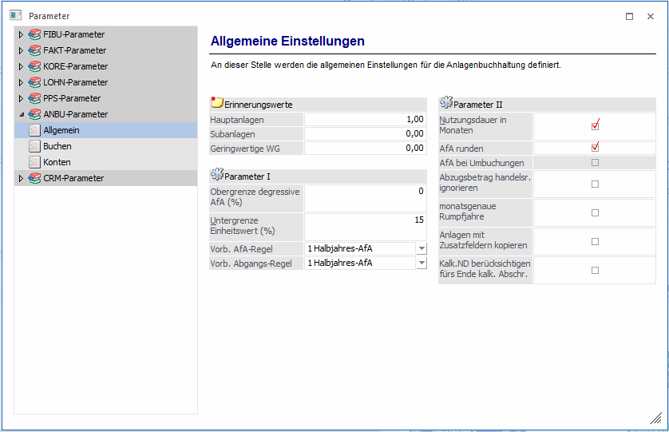
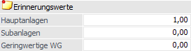
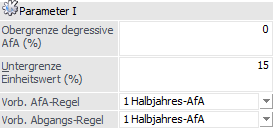
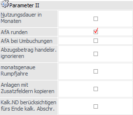

Über den Bereich "ANBU-Parameter - Buchen" können die allgemeinen Einstellungen für die WinLine ANBU definiert werden.
Hinweis
Standardmäßig wird das Fenster in einem "Lesemodus" geöffnet, d.h. es können die bestehenden Einstellungen kontrolliert, Änderungen allerdings nicht durchgeführt werden. Hierfür muss zunächst mit Hilfe des Buttons "Bearbeiten" der "Bearbeitungsmodus" aktiviert werden. Alternativ kann diese Aktivierung auch über das Kontextmenü der rechten Maustaste (Funktion "Applikation xxx bearbeiten") erfolgen.

Erinnerungswerte

Ø Erinnerungswert Hauptanlage/Subanlage
Im Eingabefeld ist ein Wert (1,00 oder 0,01) zu hinterlegen, auf den bei Verwendung des Erinnerungswertes abzuschreiben ist.
Ø Erinnerungswert GWG
Im Eingabefeld ist ein Wert (1,00 oder 0,01) zu hinterlegen, auf den bei Verwendung des Erinnerungswertes das GWG abzuschreiben ist.
Achtung
Beim Abgang eines bereits komplett abgeschriebenen Anlagegutes wird der Erinnerungswert als Abgangs-Buchwert ausgewiesen.
Parameter I

Ø Obergrenze degressive AfA (%)
Tragen Sie hier den laut Gesetz derzeit gültigen Prozentsatz ein. Dieser wird als Berechnungsbasis für die degressive Abschreibung herangezogen.
Hinweis
In Deutschland ist lt. EStG geregelt:
ab 2009 = 25 % degressive AfA und maximal das 2,5-fache der linearen AfA
2011 bis 2019 = keine degressive AfA erlaubt
2020 bis 2022 = 25 % degressive AfA und maximal das 2,5-fache der linearen AfA
1.1.2023 bis 31.3.2024 = keine degressive AfA erlaubt
1.4.2024 bis 31.12.2024 = 20 % degressive AfA und maximal das 2-fache der linearen AfA
Im Anlagenstamm wird bei der Erfassung eines degressiven Anlagegutes die maximale lineare AfA aufgrund der im Anlagenparameter hinterlegten Obergrenze intern errechnet und der maximale Jahres-AfA %-Satz entsprechend vorgeschlagen.
Wird keine Obergrenze degressive AfA (%) eingetragen, erfolgt kein Vorschlag im Anlagenstamm und auch keine Prüfung der Obergrenze.
Ø Untergrenze Einheitswert (%)
Eingabe des Prozentsatzes des Einheitswertes. Der Einheitswert ist der um die Abschreibung verminderte Anschaffungswert. Für verschiedene Anlagen gibt es gesetzliche Mindestgrenzen, unter die der Einheitswert nicht fallen darf.
Ø Vorb. AfA-Regel
Wählen Sie aus der Auswahllistbox die jeweils gültige Abschreibungsregel für Ihre Anlagegüter aus. Diese Vorbelegung wird Ihnen danach bei der Anlage im Anlagestamm automatisch vorgeschlagen.
ü 0 - monatsgenau
D.h. die
Abschreibung kann auf Grund des Datums der Inbetriebnahme monatsgenau gerechnet
werden.
ü 1 - Halbjahres-AfA
D.h.
aufgrund des Datums der Inbetriebnahme wird geprüft, ob die Anschaffung im
ersten oder zweiten Halbjahr liegt. Wird das Anlagegut im Wirtschaftsjahr mehr
als sechs Monate genutzt, dann wird der gesamte auf ein Jahr entfallende Betrag
abgeschrieben, sonst die Hälfte dieses Betrages.
ü 2 - Ganzjahres-AfA
D.h.
unabhängig vom Datum der Inbetriebnahme wird die Abschreibung für ein ganzes
Jahr berechnet.
ü 3 - halbe AfA im ersten
Jahr
D.h. im ersten Jahr wird nur die Hälfte des gültigen
Abschreibungsprozentsatzes zur Berechnung der Abschreibung herangezogen.
ü 4 - tagesgenau
D.h. die
Abschreibung wird aufgrund des Datums der Inbetriebnahme tagesgenau gerechnet.
Es wird auf die Anzahl der Tage aliquotiert, die das Anlagegut in diesem Jahr im
Betrieb ist.
Ø Vorb. Abgangs-Regel
Bei einem Abgang oder Teilwert-Abgang kann wahlweise die anteilige AfA für das abgehende Anlagegut automatisch errechnet werden.
Wählen Sie aus der Auswahllistbox die jeweils gültige Abgangsregel für Ihre Anlagengüter aus. Diese Vorbelegung wird Ihnen danach bei der Anlage im Anlagestamm automatisch vorgeschlagen.
ü 0 - monatsgenau
D.h. bei einem
Abgang oder Teilwert-Abgang wird die anteilige Abgangs-AfA incl. Abgangsmonat
berechnet.
ü 1 - Halbjahres - AfA
D.h. bei
einem Abgang oder Teilwert-Abgang wird je nach Abgangsdatum die halbe oder ganze
Jahres-AfA als Abgangs-AfA abgeschrieben. Liegt der Abgang im ersten Halbjahr,
wird die halbe Jahres-AfA als Abgangs-AfA ausgewiesen und bei einem Abgang im
zweiten Halbjahr die komplette Jahres-AfA.
ü 2 - Ganzjahres-AfA
D.h.
unabhängig vom Abgangsdatum wird die komplette Jahres-AfA als Abgangs-AfA
gerechnet.
ü 3 - keine AfA
D.h. dass keine
Abschreibung mehr im Jahr des Abganges erfolgt.
ü 4 - tagesgenau
D.h. bei einem
Abgang oder Teilwert-Abgang wird die anteilige Abgangs-AfA im Abgangsmonat
tagesgenau bis zum Abgangsdatum gerechnet.
Parameter II

Ø Nutzungsdauer in Monaten
Mit dem Programm WinLine ANBU kann die Nutzungsdauer auch in Monaten angegeben werden. Wenn Sie die Nutzungsdauer Ihrer Anlagegüter in Monaten angeben wollen, dann aktivieren Sie dieses Feld durch einfaches Anklicken mit der Maus.
Ø AfA runden
Ist diese Option aktiviert, wird das Programm die AfA so berechnen, dass mit der ersten Jahres-AfA die Cent-Differenz mitgebucht wird, damit in den Folgejahren ganzzahlige AfA-Beträge abgeschrieben werden können.
Ø AfA bei Umbuchungen
Wenn diese Checkbox aktiviert ist, wird bei der Umbuchung die anteilige AfA anhand des Umbuchungsdatums berechnet.
Hinweis - Berechnungsgrundlage für die anteilige AfA
Beim "abgehenden" Anlagegut wird die im Anlagenstamm hinterlegte Abgangsregel (monatsgenau etc.), beim "aufnehmenden" Anlagegut wird die hinterlegte AfA-Regel (monatsgenau etc.) berücksichtigt.
Wenn die Checkbox nicht aktiviert ist, wird die Umbuchung so gerechnet als ob sie zum Beginn des Jahres erfolgt und richtet sich dann nicht nach dem Umbuchungsdatum.
Ø Abzugsbetrag handelsr. ignorieren
Ist diese Checkbox aktiviert, wird der Abzugsbetrag vom Anschaffungswert nur noch steuerrechtlich abgezogen und daraus der Historische Stand Anfang berechnet. Für die handelsrechtliche Abschreibung und die Darstellung der handelsrechtlichen Werte wird der Abzugsbetrag nicht berücksichtigt.
Die Checkbox kann pro Wirtschaftsjahr aktiviert bzw. deaktiviert werden. Wenn der Abzugsbetrag z.B. ab 2010 handelsrechtlich nicht mehr berücksichtigt werden darf, dann in allen Wirtschaftsjahren ab 2010 die Checkbox im Anlagenparameter aktivieren.
Ø monatsgenaue Rumpfjahre
Mit dieser Checkbox wird gesteuert, wie die Abschreibung in Rumpf-Wirtschaftsjahren erfolgt. Ist die Checkbox aktiviert, wird die Jahres-AfA auf die Anzahl der Monate des Rumpfjahres reduziert.
Ist die Checkbox nicht aktiviert, wird die Jahres-AfA wie bei normalen Wirtschaftsjahren berechnet. Nur wenn das Rumpf-Wirtschaftsjahr maximal 6 Monate umfasst, wird die halbe Jahres-AfA gerechnet.
Ø Anlagen mit Zusatzfeldern kopieren
Ist diese Option aktiv und werden bei der Neuanlage von einem Anlagegut die Daten von einem bestehenden Anlagegut mit F9 übernommen, dann werden auch die Zusatzfelder mit übernommen. Ist die Checkbox inaktiv, und ein Datensatz wird übernommen, dann bleiben die Zusatzfelder leer.
Ø Kalk. ND berücksichtigen fürs Ende Kalk.Absch.
Ist diese Option aktiv, wird nach Ende der im Anlagenstamm / Register Stamm 2 hinterlegten kalk. Nutzungsdauer die kalkulatorische Abschreibung nicht weiter durchgeführt.
Ist diese Option nicht aktiv, endet die kalkulatorische Abschreibung erst mit dem Abgang des Anlagegutes.
Achtung - Bei Beginn der Anlagenbuchhaltung nicht im ältesten, offenen Wirtschaftsjahr
Beispiel: Im Jahr 2024 wird mit der ANBU begonnen und die Anlagegüter mit den entsprechenden Vortragswerten per 01.01.2024 erfasst oder importiert, obwohl noch das Jahr 2023 im Mandanten existiert. Wenn im alten Wirtschaftsjahr 2023 die Historienwartung angewählt wird oder ein Anlagegut mit ok gespeichert wird, wird auch eine AfA-Zeile für 2023 in der Entwicklung angelegt.
Der Buchwert wird hierbei aber nicht verändert und die ANBU-Werte sind nicht mehr korrekt. Die Historienwartung wird ab dem ersten, ältesten Wirtschaftsjahr ohne Jahresabschreibung durchgeführt. Daher muss, wenn die ANBU nicht im ältesten, offenen Wirtschaftsjahr eines Mandanten eingerichtet wird, für das alte Jahr erst die Jahresabschreibung durchgeführt werden - auch wenn keine Werte dabei berechnet werden. Wichtig ist, dass das Datum der letzten Jahresabschreibung intern gespeichert wird.